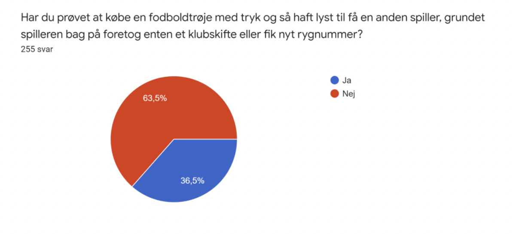
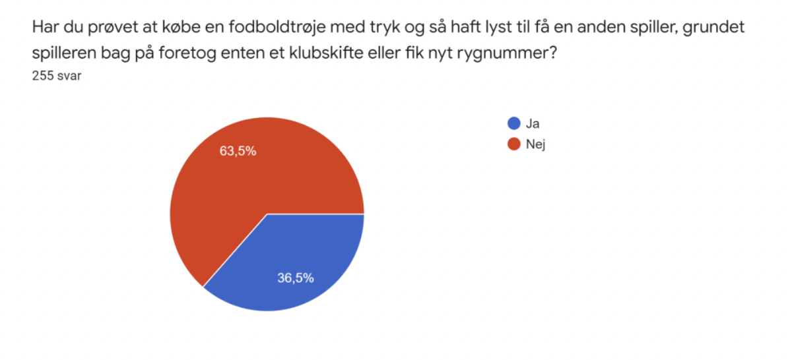

I tema 4 skulle vi designe vores helt eget animationsspil from scratch. Det var her vi for første gang begyndte at anvende Javascript. I starten af temaet havde lærte vi om nogle grundprincipper for design af figurer til spillet og derefter lavede vi nogle øvelser der kunne hjælpe til i vores ideudvikling. Det var med til at jeg kunne begynde på mit spil ”Havnen” som handlede om rapperen Jokeren der var blevet søsyg i en havn, stilen var insprireret af flat design. Spillet handler om, at man skal finde en brækpose jokeren kan brække sig i. Tilgengæld regner det også med "Den gale pose" som man altså ikke på klikke på. Til at kode spillet benyttede jeg mig af et aktivitetsdiagram og State Machine diagram, hvilket gav et godt overblik og gjorde det nemmere at kode i
Java-script.

 
